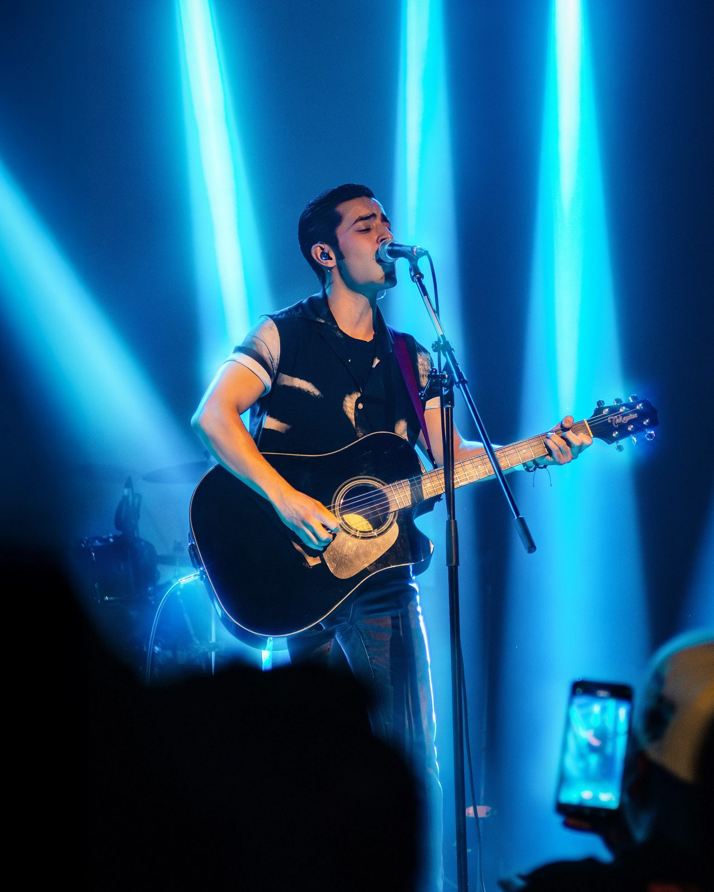

Banda
Banda de Monterrey, Nuevo León. Formada en 2018, influenciada por el pop punk y punk rock, con guitarras que recuerdan a bandas de la década de los 90 al 2000 como Panda y División Minúscula. (Follow Control, ene 2024)
-
José Bernardo “Bernie”
Guitarra
“Bernie”.
-
Emmanuel Batarse (“Emmash”)
Batería · Productor
También productor; canta segundas voces en vivo. @emmashbatarse ↗
-
Mau Batarse
Bajo y voz · por confirmar el nombre completo
Bajo y voz en vivo, según la cuenta oficial de la banda. @diezellmx, 2 sep 2026 ↗ · @mau.batarse ↗
Bajo — por confirmar: la Wikipedia (artículo borrado el 17 jul 2026) listaba a José Aguilar; la cuenta oficial @diezellmx presenta a Mau Batarse como bajista desde 2026. No hay fuente que feche el cambio ni que confirme si Aguilar fue bajista anterior. Pregunta abierta a la banda.
Los cuatro, en vivo
La banda sobre el escenario

René en vivo, luces azules
Foto: Balleza Photography
“Diezell | INSANIA”, Behance, 9 feb 2026
Ver fuente ↗

Diezell en Monterrey
Foto: Balleza Photography
“Diezell | Monterrey, Nuevo León”, Behance, 10 dic 2025
Ver fuente ↗
2015 — 2026
Historia
- 2015
Empiezan como banda de covers a finales de 2015, tocando en la calle Morelos, en el centro de Monterrey, como hobby. Monterrey Live, 30 oct 2023 · Punkeando, 15 ago 2021
- 2018
Se consolidan como proyecto original con el nombre Diezell. “El nombre de Diezell fue parte de una broma entre ellos y así se les quedó.” Follow Control, ene 2024
- 2021
“Sin Rencores”, su sencillo debut, fue un boom para empezar a ser escuchados y reconocidos. Llega su primer EP, de cinco canciones. Puro Rock Puro, 5 oct 2023 · Punkeando, 15 ago 2021
- 2023
29 de septiembre: Caótico, su primer álbum. El 20 de enero de 2024, “La Primer Noche Caótica” en Foro Tims abre su primera gira. Monterrey Live, 30 oct 2023
- 2024
Primera gira nacional. Punkeando los incluye entre las 10 bandas mexicanas a seguir en 2024. Se vuelven virales por las similitudes que el público encuentra con PXNDX. Punkeando, 1 ene 2024
- 2025
28 de noviembre: INSANIA, su segundo álbum. Se presenta el 6 de diciembre en Foro Tims. Puro Rock Puro, 16 dic 2025
- 2026
Video oficial de “Tus Flores Fueron Entregadas” (dir. David Miranda). René canta “Martirio” con Kross Vázquez (ex PXNDX) en VIVX PXNDX Vol. 1. Insania Tour por 9 ciudades + Mexicali TBA. Puro Rock Puro, 15 abr 2026 · Heraldo de México, 3 abr 2026
Prensa
- Caótico, uno de los mejores lanzamientos de esta segunda parte del 2023 — Puro Rock Puro, 5 oct 2023
- INSANIA: una etapa más cruda, intensa y emocional — Puro Rock Puro, 16 dic 2025
- “Tus Flores Fueron Entregadas”, una de las canciones que mejor resume la carga emocional del proyecto — Puro Rock Puro, 15 abr 2026
- Diezell entre las 10 bandas mexicanas a seguir en 2024 — Punkeando, 1 ene 2024
- Diezell debutará en vivo en el Foro Tims — Monterrey Live, 30 oct 2023
- Diezell se prepara para su primera gira por México — Mr Indie, entrevista
Datos curiosos
- El nombre Diezell nació de una broma interna y “así se les quedó”.
- Emmanuel Batarse (“Emmash”) también es productor: ha producido a Rebelmate, Say Ocean y AZVR.
- “Donde Nada Puede Malir Sal” es el track 9 de INSANIA, escrito así en Spotify; los fans lo han convertido en frase y meme.
- La portada de INSANIA tiene el título invertido: al derecho se lee VINVSNI.
- Su canción más escuchada es “El Cuento De Aquel Imperfecto Ser” (1,678,233 en Spotify, 15 nov 2026; 576,090 views en YouTube, 20 nov 2026).
- Un fan se convirtió en bajista de la banda: iba a los ensayos desde la secundaria y ayudó a filmar “Al parecer eso parece”.
Datos · 20 nov 2026
Los números
44,147oyentes mensuales en SpotifyMusic Metrics Vault, dato del 16 nov 2026 · −675 vs. 8 nov (−1.5%) · Oyentes del 8 nov 2026: 44,822 · Género en Spotify: mexican pop punk
16,525seguidores en SpotifyMusic Metrics Vault, dato del 16 nov 2026 · Puesto global en Viberate: 112,689
69.47%de los oyentes, en México
8.51%de los oyentes, en Perú
4.25%de los oyentes, en Ecuador
Lo más escuchado
- 01El Cuento De Aquel Imperfecto Ser1,678,233
- 02Sin Rencores1,048,396
- 03Martes Con Aroma A Domingo598,427
- 04De Espaldas586,078
- 05Suspensión...585,675
Las dos primeras, verificadas el 15 nov 2026; el resto, cifras del 8 nov 2026. Solo 2 canciones pasan del millón.
Dónde se escucha más
- 01Ciudad de México5,768
- 02Lima2,641
- 03Monterrey2,018
- 04Guadalajara1,682
- 05Puebla1,586
Oyentes mensuales por ciudad, Spotify · 15 nov 2026.
Otras plataformas
- YouTube — suscriptores12.2K
- TikTok — seguidores13,756
- Deezer — fans886
- Instagram — seguidores~6.9K
- Facebook — seguidores~10K
TikTok y Deezer, corte del 20 nov 2026; YouTube vía Viberate; Instagram y Facebook, cifras del 8 nov 2026.
Ver el crecimiento, corte a corte →
Fuentes
- Spotify · artista ↗
- Spotify · Caótico ↗
- Spotify · INSANIA ↗
- YouTube · @diezellmx ↗
- Puro Rock Puro · Caótico ↗
- Puro Rock Puro · INSANIA ↗
- Puro Rock Puro · video Tus Flores ↗
- Follow Control · Primera Noche Caótica ↗
- Punkeando · 10 bandas a seguir 2024 ↗
- Heraldo de México · VIVX PXNDX ↗
- Mr Indie · entrevista ↗
- Monterrey Live ↗
- Letras.com · Diezell ↗